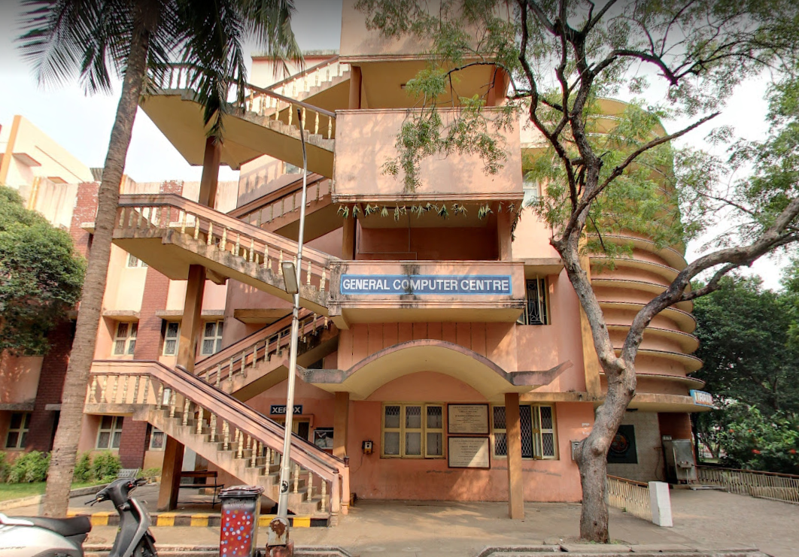
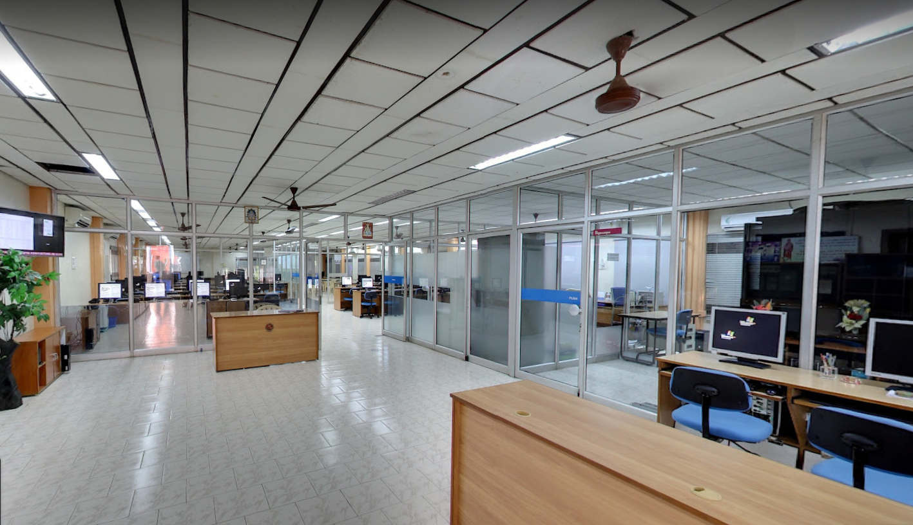
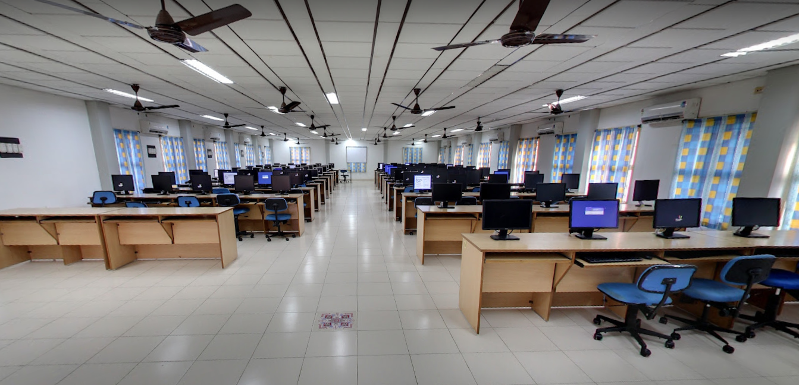

General Computer Centre
GCC is responsible for the core SRKR network. The GCC supports a campus wide 1000 Mbps(Giga Bit) LAN that connects all the academic departments, library and other central facilities to the GCC. Internet access is provided through 24*7 INTERNET connectivity through a 300 Mbps 1:1 leased line and 40 Mbps bundled broadband connection. GCC will provide connectivity to each Department, to the gigabit backbone with 12-core OFC, and also the necessary IP addresses.GCC has installed WLAN on 802.11b/g to allow accessing SRKREC computing resources (Local network and Internet) through the Wireless communication. WLAN is used to provide reliable and proper network connectivity to mobile on-campus users. In each building we have placed the access point in a place which would be most convenient for mobile users. As of now, the campus is installed with 16 access points in various outside locations.
OBJECTIVES
SPECIFICATIONS OF THE GENERAL COMPUTER CENTRE
- Improving the Educational ERxperience of the Students, Faculty and the Staff by supporting their Research and Academic Activities.
- Providing Automation support to the college for day to day administration, Research Activities as well as Courses and Assignments.
- GCC is equipped with State-of-Art computing facilities to compliment classroom pedagogy. The centre has 5 servers and 200 nodes connected by switches and Cat 5e cabling with passable pack of system and application software.
- GCC is responsible for the core SRKR network. The GCC supports a campus wide 1000 Mbps(Giga Bit) LAN that connects all the academic departments, library and other central facilities to the GCC. Internet access is provided through 24*7 INTERNET connectivity through a 300 Mbps 1:1 leased line and 40 Mbps bundled broadband connection. GCC will provide connectivity to each Department, to the gigabit backbone with 12-core OFC, and also the necessary IP addresses.
- GCC has installed WLAN on 802.11b/g to allow accessing SRKREC computing resources (Local network and Internet) through the Wireless communication. WLAN is used to provide reliable and proper network connectivity to mobile on-campus users. In each building we have placed the access point in a place which would be most convenient for mobile users. As of now, the campus is installed with 16 access points in various outside locations.